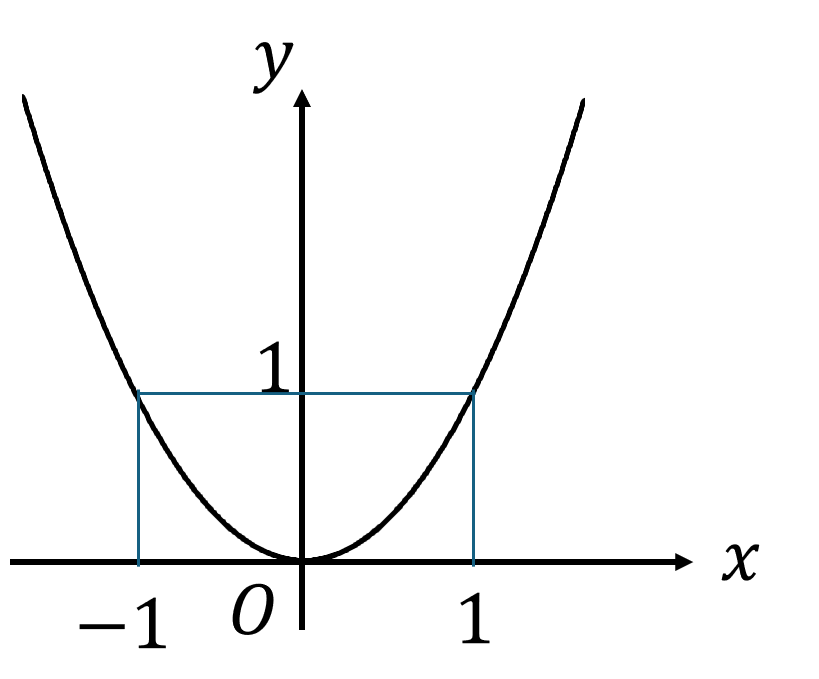
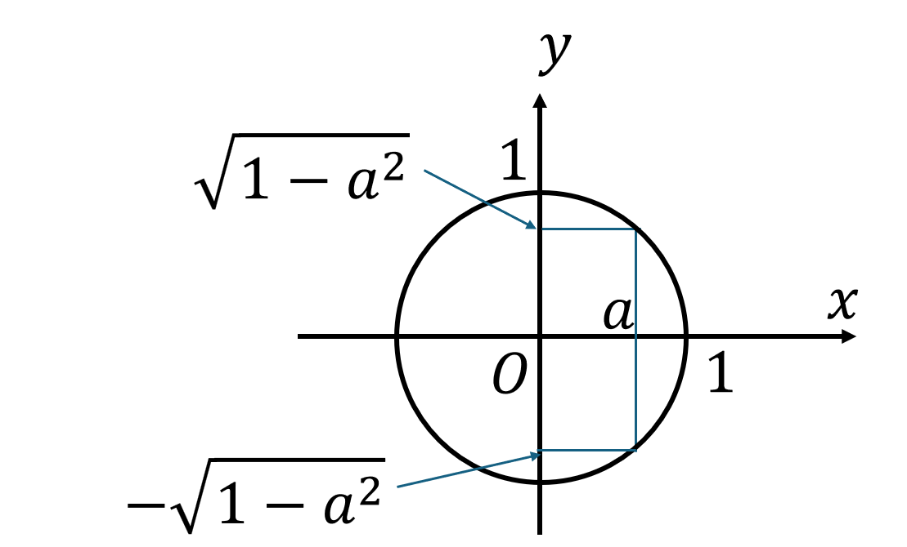
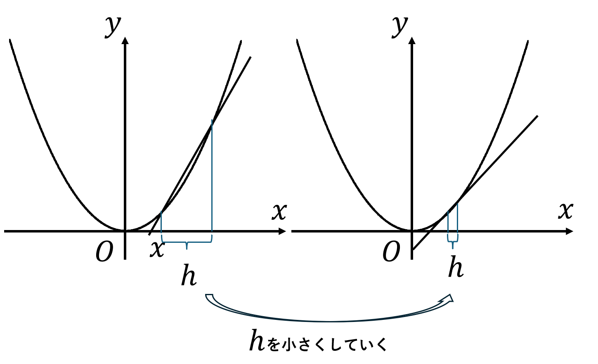

微分の定義
写像

実数\(x,y\)について、放物線\(y=x^2\)のように\(x\)を１つ定めると、\(y\)が１つ定まるものを写像(関数)といいます。この放物線について、\(x\)は\(y\)の写像になりませんね。例えば、\(y=1\)となる\(x\)は、\(x=-1,1\)と２つ定まってしまいます。

円を表すグラフについても写像にはなりません。\(x\)軸上の点\(a\in(-1,1)\)について、(記号\(\alpha\in U\)は\(\alpha\)は集合\(U\)の要素という意味です。)\(y=\pm\sqrt{1-a^2}\)の2点が定まってしまいます。円の上半分だけを取ったものは写像となります。
\[y=\sqrt{1-x^2}\]
\(x\)の取りうる範囲を定義域\(x\in[-1,1]\)といいます。\(y\)の取りうる値の範囲を値域\(y\in[0,1]\)といいます。\(y=f(x)\)という表記もあります。
\[f\left(\frac{1}{2}\right)=\sqrt{1-\left(\frac{1}{2}\right)^2}=\frac{\sqrt{3}}{2}\]
\(y=f(x)\)は代入された値がわかりやすいのでお勧めです。また\(f\)は写像自体を表す記号でもあり、写像\(f\)は点\(x\)を点\(y\)を写すというのを記号で
\[f:x\mapsto y\]
と書きます。写像\(f\)は集合\([-1,1]\)から、集合\([0,1]\)へ写すというのを記号で
\[f:[-1,1]\to [0,1]\]
と書きます。
微分の定義
写像\(f:\mathbb{R}\to\mathbb{R}\)(実数\(\mathbb{R}\)上の値を定めると、\(\mathbb{R}\)上の値が1つ決まる。)について微分を
\[\frac{df}{dx}(x)=\lim_{h\to 0}\frac{f(x+h)-f(x)}{h}\]
と定義します。\(\lim\)は極限を表す記号で\(h\)を\(0\)に近づけるという意味です。

\[\frac{f(x+h)-f(x)}{h}\]
は点\((x,f(x))\)と点\((x+h,f(x+h))\)の2点を通る直線の傾きとなります。\(h\to0\)で2点は\((x,f(x))\)で重なります。つまり微分とは、グラフ\(y=f(x)\)における点\((x,f(x))\)で接する直線の傾きを表します。
微分できない写像
\[y=|x|=\begin{cases}-x&x\lt 0\\
x&0\le x\end{cases}\]
\(x=0\)で尖っている関数です。グラフ\(y=f(x)\)上の\(0,0\)には複数の接線が引けてしまい、１つに定まりません。
\[\frac{f(0+h)-f(0)}{h}=\frac{|h|}{h}\]
\(h\gt0\)から\(0\)に近づけるか、\(h\lt0\)から\(0\)に近づけるかで、\(\pm1\)のどちらかになってしまい微分が１つに定まりません。
\[y=|x|=\begin{cases}0&x\lt 0\\
1&0\le x\end{cases}\]
\(x\)が負の時は\(0\)で、\(x\)が正になった瞬間\(1\)にぶちあがる写像です。\(h\gt0\)の場合
\[\frac{f(0+h)-f(0)}{h}=\frac{1-1}{h}=0\]
\(h\lt0\)の場合
\[\frac{f(0+h)-f(0)}{h}=\frac{1-0}{h}=\frac{1}{h}\to-\infty\]
\(h\)を0に近づけていくと、負の方向にいくらでも小さくなっていきます。このように尖っているグラフやちぎれているグラフとなる写像\(f:\mathbb{R}\to\mathbb{R}\)では微分を定義できません。